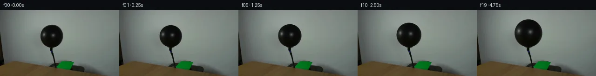

![首帧]()

Round 00
2026-11-05T17:06:42.954028+00:00像素候选变化代码 +160/−0inspection 更新
pixels ce3a1ec0b00cf152 · code 748d84cc78d149b7
查看本轮 generate.py 真实 diff
--- previous/generate.py
+++ current/generate.py
@@ -0,0 +1,160 @@
+"""PixelWorld vision-input generator — case_0039_attempt_01.
+
+Scene (from first_frame.png + prompt.txt): a black balloon is attached to an
+upward-pointing black hose behind a wooden table; air is pumped into it.
+Locked-off camera; only the balloon changes: it inflates over 5 s while
+staying anchored to the nozzle.
+
+Method (pure local pixel math, no external models):
+ * frame 00 is an exact copy of first_frame.png;
+ * the static wall behind frame-0 balloon is reconstructed with cv2.inpaint
+ on the original silhouette (mask margin for sway/breathing exposure),
+ plus a frozen matched grain field;
+ * each later frame draws an antialiased sphere (4x4 supersampling) whose
+ shading is the frame-0 balloon shading field radially rescaled to the
+ current radius, with a gentle gloss multiplier for rubber thinning;
+ * radius follows an eased inflation curve with small 1.6 Hz pump breathing
+ and 1.1 Hz sway; the bottom tangent (nozzle anchor) stays fixed;
+ * hose, blue clamp, pump, green book, table, doorway are untouched.
+
+Run: python3 generate.py (writes frames/, pixels.npz, inspection.png,
+index.html via artifact_io, plus transition_check.png)
+"""
+from pathlib import Path
+import numpy as np
+from PIL import Image, ImageDraw
+import cv2
+
+import artifact_io
+
+CASE = Path(__file__).resolve().parent
+TMP = CASE / ".tmp"
+TMP.mkdir(exist_ok=True)
+
+W, H, N, FPS = 256, 144, 20, 4
+
+# --- frame-0 geometry / measurements (see OBSERVATION.md) -------------------
+CX0, CY0, R0 = 110.5, 57.0, 24.0 # frame-0 balloon circle
+ANCHOR_Y = CY0 + R0 # 81.0, fixed nozzle tangent
+KNOT_Y = 80 # mask cutoff: keep knot/hose original
+
+frame0 = np.array(Image.open(CASE / "first_frame.png").convert("RGB"))
+assert frame0.shape == (H, W, 3)
+
+yy, xx = np.mgrid[0:H, 0:W].astype(np.float64)
+
+# --- reconstruct static wall where frame-0 balloon stands -------------------
+# silhouette mask with AA/edge margin, but never below the knot cutoff
+dist0 = np.sqrt((xx - CX0) ** 2 + (yy - (ANCHOR_Y - R0)) ** 2)
+inpaint_mask = ((dist0 < R0 + 2.2) & (yy <= KNOT_Y)).astype(np.uint8) * 255
+inp = cv2.inpaint(frame0, inpaint_mask, 3, cv2.INPAINT_TELEA)
+
+# frozen grain matched to wall's ~0.5-1.0 per-channel high-frequency noise
+rng = np.random.default_rng(3901)
+grain = rng.normal(0, 0.7, (H, W)).astype(np.float32)
+grain = cv2.GaussianBlur(grain, (3, 3), 0.55) * 1.15
+m3 = cv2.dilate(inpaint_mask, np.ones((3, 3), np.uint8), iterations=1) > 0
+background = frame0.copy()
+background[m3] = np.clip(inp[m3].astype(np.float32) + grain[m3, None], 0, 255)
+
+
+def shade_sample(u, v):
+ """Bilinear sample of the frame-0 balloon shading field at normalised
+ coords (u,v) of the unit sphere (frame-0 circle)."""
+ sx = CX0 + u * R0
+ sy = CY0 + v * R0
+ x0 = np.floor(sx).astype(np.int64)
+ y0 = np.floor(sy).astype(np.int64)
+ tx = sx - x0
+ ty = sy - y0
+ x0c = np.clip(x0, 0, W - 2)
+ y0c = np.clip(y0, 0, H - 2)
+ x1c = x0c + 1
+ y1c = y0c + 1
+ Ia = frame0[y0c, x0c].astype(np.float32)
+ Ib = frame0[y0c, x1c].astype(np.float32)
+ Ic = frame0[y1c, x0c].astype(np.float32)
+ Id = frame0[y1c, x1c].astype(np.float32)
+ txx = tx[..., None]
+ tyy = ty[..., None]
+ return Ia * (1 - txx) * (1 - tyy) + Ib * txx * (1 - tyy) \
+ + Ic * (1 - txx) * tyy + Id * txx * tyy
+
+
+# 4x4 supersample offsets
+SS = 4
+off = (np.arange(SS) + 0.5) / SS
+sxx, syy = np.meshgrid(off, off)
… diff truncated; 73 more lines …